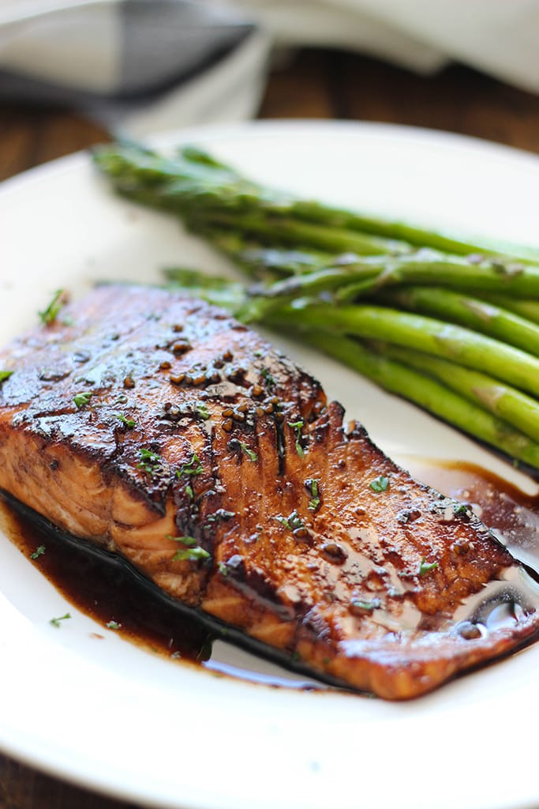

Glazed Salmon

Ingredients
- salmon fillets
- 4 tbsp balsamic vinegar
- 1/2 cup honey
- 4 cloves of garlic
- 1 tbsp soy sauce
- 1 tbsp water
- 1 tsp sriracha
- salt
- pepper
- paprika
Instructions
- Preheat oven to a broil (~400)
- Mince garlic. Pat salmon fillets dry and season with salt, pepper,
and paprika.
- Heat an oven safe skillet over medium high heat. Combine balsamic
vinegar, honey, soy sauce, water, sriracha, and garlic to make glaze.
- Add salmon skin side down to skillet. Baste constantly for 3 minutes.
- Add skillet to oven, bake for 3 minutes, baste, then bake another 3
minutes.